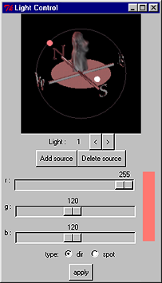
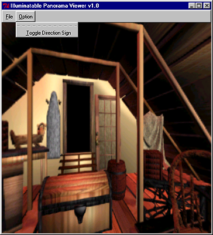

|
panoview demo version 1.0
Program code contributors: Tien-Tsin Wong |
Introduction
-
- This program demonstrates the ability to interactively relight an illumination-adjustable panoramic image. Users are allowed not just to pan, rotate and zoom within an panoramic environment as in QuickTime VR but also to change the lighting condition interactively. As many web-based applications make use of panoramic image representation, the data size must be very compact. The compact data sets come with this package demonstrate the effectiveness of our compression engine so as to facilitate efficient data transfer throught the Internet.
System Requirement
- Hardware: Pentium III or above, 128MB RAM.
- OS: Windows 98/NT/2000, with OpenGL
Installation Instruction
-
(1) Download the InstallShield of panoview demo 1.0,
panoview-install.zip
(2) Extract the files and run "setup.exe"
-
Note:
- To execute the demo, Windows 2000/XP users have to change path to the install path to start the demo in command line. This is because the InstallShield cannot successfully set the working path for Windows 2000/XP.
User Manual
-
  Instructions: (Move the mouse cursor over the above interface to see the function of each widget)
Publication
-
"
Interactive Relighting of Panoramas",
T. T. Wong, C. W. Fu and P. A. Heng,
IEEE Computer Graphics & Applications, Vol. 21, No. 2, March-April 2001, pp. 32-41.
Related Publication
- "
Image-based Rendering with Controllable Illumination",
T. T. Wong, P. A. Heng, S. H. Or and W. Y. Ng,
in Proceedings of the 8-th Eurographics Workshop on Rendering (Rendering Techniques'97), St. Etienne, France, June 1997, pp. 13-22. - "
The Plenoptic Illumination Function",
T. T. Wong, C. W. Fu, P. A. Heng and C. S. Leung,
IEEE Transactions on Multimedia, Vol. 4, No. 3, September 2002, pp. 361-371.
(This paper received the IEEE Transactions on Multimedia Prize Paper Award 2005.)